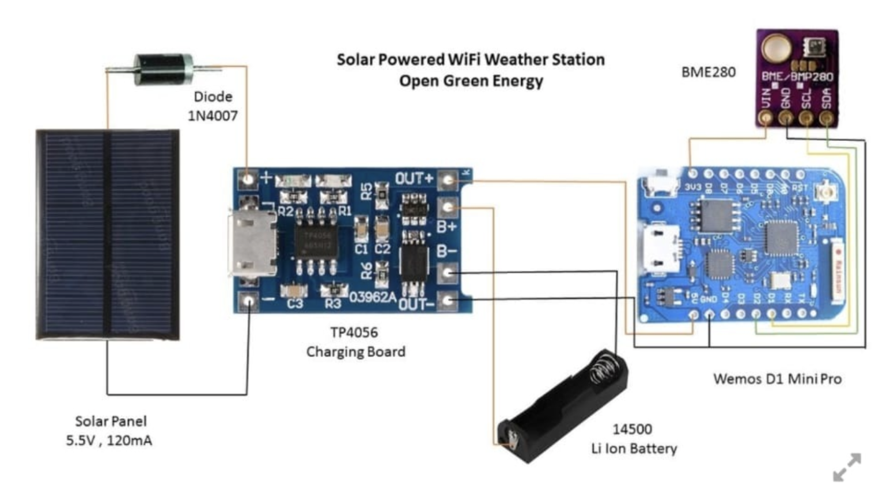
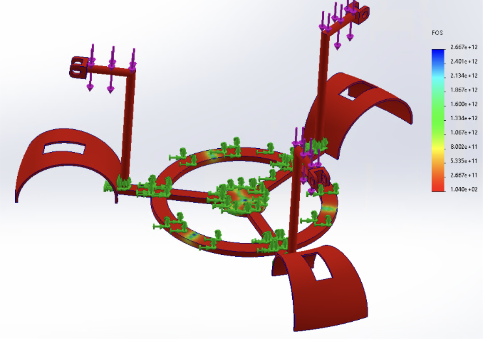

System Overview
The floating platform is designed with modular stability and mobility in mind. It features three angled solar panels mounted to a buoyant circular base. A lightweight arm with a reflective mirror rotates to track sunlight, guided by light-dependent resistors. The structure ensures balance in wave conditions, while enclosing sensitive electronics in a sealed central core.
Electronics Integration
The circuit includes a 5.5V solar panel, a TP4056 charging module for a 14500 Li-ion battery, and a Wemos D1 Mini Pro microcontroller for WiFi-based telemetry. A BME280 sensor measures environmental data, while onboard logic adjusts mirror orientation to optimize sunlight exposure for the panels.
Structural Simulation
Finite element analysis confirmed structural integrity under simulated wave and wind conditions. Stress was concentrated at mounting points but remained well within safe operating limits. The results support long-term deployment in dynamic aquatic environments with minimal maintenance.